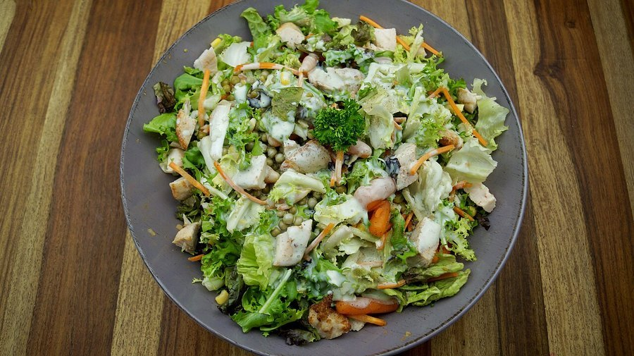

Fermented Foods and Brain Health: What the Gut-Brain Evidence Shows
Kimchi, kefir, sauerkraut and miso keep showing up on brain-health lists. Here's a plain-English look at what the research on fermented foods and the gut-brain connection actually supports right now.

Photo: FitTasteTic / Wikimedia Commons / CC BY-SA 2.0
Key takeaways
- Fermented foods contain live microbes that can influence the gut microbiome, and a healthier, more diverse microbiome is linked to lower inflammation in observational research.
- A 2021 Stanford study found that a fermented-food-rich diet increased microbial diversity and lowered several inflammatory markers over ten weeks, more than a high-fiber diet did in the same trial.
- The gut-brain axis is real and well documented, but most of the direct evidence connecting it to memory and cognition still comes from animal studies, not large human trials.
- Not all fermented foods are equal. Look for "live and active cultures" on the label; many shelf-stable, pasteurized products no longer contain live microbes.
- They aren't risk-free for everyone. Sodium content, histamine and interactions with certain medications mean some people should be more cautious than others.
Fermented foods went from a niche gut-health interest to a fixture of brain-health advice in a few short years. Kimchi and kefir show up next to blueberries and salmon on nearly every "foods for your brain" list now. The gut-brain connection behind that advice is real science, not a wellness trend invented from nothing. But there's a real gap between "the gut-brain axis exists" and "eating sauerkraut will sharpen your memory," and it's worth understanding exactly where that gap sits.
What counts as a fermented food?
Fermentation is a process where microorganisms, bacteria, yeast or both, break down sugars and other compounds in food, often producing acids, alcohol or gases along the way. The foods most associated with brain-health claims include yogurt and kefir, sauerkraut and kimchi, miso and tempeh, natto, and kombucha. Some of these retain live, active cultures of bacteria or yeast when eaten. Others, especially foods that have been pasteurized, cooked or heavily processed afterward, may not, even though the fermentation happened at some point in production.
What is the gut-brain axis, and is it real?
Yes, and it's one of the more well-established ideas in this space. The gut-brain axis describes the two-way communication network between the digestive system and the central nervous system, running through the vagus nerve, the immune system, hormonal signaling and metabolites produced by gut bacteria. Short-chain fatty acids, a class of compounds gut bacteria make when they ferment dietary fiber, are one of the better-studied examples. In animal research, these compounds appear to support the blood-brain barrier and influence inflammation in the brain. This axis is a genuine, actively researched system. The open question isn't whether it exists, but how much a person's day-to-day food choices, fermented foods included, actually move it in a way that shows up as a real difference in thinking or memory.
What does the actual research on fermented foods show?
The most frequently cited human study here is a 2021 trial out of Stanford, published in the journal Cell, which put participants on either a diet rich in fermented foods or a diet rich in fiber for ten weeks. The fermented-food group showed increases in overall microbiome diversity and reductions in several markers of inflammation, while the high-fiber group's inflammatory markers didn't move the same way over that period. That's a meaningful finding about diet and the immune system. It is not, on its own, a study about memory or cognitive performance. Researchers didn't test recall, attention or any other brain-specific outcome in that trial, and it would be overstating things to describe it as proof that fermented foods improve thinking.
Beyond that trial, most of the work connecting fermented-food consumption to cognitive outcomes specifically comes from smaller studies, animal models or research on probiotic supplements rather than whole fermented foods eaten as part of a normal diet. Some of that research, often filed under the term "psychobiotics," has looked at specific probiotic strains and mood or stress markers, with mixed and still-preliminary results. It's a genuinely active research area. It just hasn't produced the kind of large, well-controlled human trials that would let anyone confidently say fermented foods improve memory.
COMPLEX
The memory formula we rate highest in 2026
One formula combined a fully transparent, clinically-dosed label, citicoline, bacopa, phosphatidylserine and B-vitamins, with a 60-day guarantee.
See Today's Price →Which fermented foods are worth including, and how much?
Yogurt and kefir with live active cultures are the easiest starting point for most people, since they're widely available and well tolerated. A daily serving is a reasonable, unremarkable amount, in line with general dietary guidance rather than any special brain-health dose. Kimchi, sauerkraut and miso add fermented microbes along with fiber and, in the case of kimchi and sauerkraut, vegetables you'd likely benefit from eating anyway. Tempeh and natto offer plant protein alongside fermentation, with natto also supplying vitamin K2. Kombucha can fit in too, though some commercial varieties carry meaningful added sugar, worth checking before treating it as a health food by default.
None of this requires an overhaul. Swapping in a fermented food a few times a week, alongside the fiber-rich vegetables, fruits and whole grains that feed a healthy gut microbiome in the first place, is a reasonable, low-risk way to support general gut health. Fiber matters here too. The same Stanford research found real benefits from a high-fiber diet as well, just a different kind of benefit than the fermented-food group showed, which suggests the two approaches aren't competing so much as complementary.
Who should be cautious with fermented foods?
A few groups warrant more care. Fermented foods like miso, sauerkraut and kimchi are often high in sodium, which matters if you're managing blood pressure. Some fermented foods naturally contain histamine or tyramine, compounds that can trigger headaches, flushing or other symptoms in people with histamine intolerance or those taking certain medications, including some antidepressants. People with compromised immune systems should talk to a doctor before significantly increasing live-culture foods, since the safety profile of large amounts of live bacteria is different for someone who is immunocompromised. None of this makes fermented foods dangerous for the average healthy adult. It just means "more is better" isn't a safe assumption here.
Should you eat fermented foods for your brain, or just for general health?
Both framings can be true without overselling the evidence. Fermented foods have a reasonable, if still incomplete, case behind them for supporting gut health and lowering inflammation, and inflammation is genuinely tied to cognitive aging in a growing body of research. That's a legitimate, if indirect, reason to include them as part of an overall pattern of eating that supports the brain, alongside the habits covered in our guide to the gut-brain connection. It's a different claim from saying a serving of kimchi will sharpen your recall by dinner, and nobody has shown that. If you're specifically interested in gut-focused approaches to brain fog, our look at probiotics and brain fog covers the supplement side of this same research area in more depth.
Frequently asked questions
Do fermented foods really help the brain?
The evidence is promising but still developing. Some fermented foods appear to support a more diverse gut microbiome and lower certain inflammation markers, both of which are linked to brain health in observational research. Direct evidence that eating fermented foods improves memory or cognition in humans is limited so far.
Which fermented foods have the most research behind them?
Yogurt and kefir with live active cultures have the deepest research base, partly because they're easy to standardize in studies. Kimchi, sauerkraut, miso, tempeh and kombucha are less studied individually but share similar live-culture and fermentation properties.
How do fermented foods affect the gut-brain connection?
Researchers think live microbes and their metabolites can influence the gut-brain axis through the vagus nerve, immune signaling and compounds like short-chain fatty acids. This is an active area of study, and the exact size of the effect on brain function in humans isn't settled.
Are fermented foods safe for everyone?
Not universally. Some fermented foods are high in sodium, which matters for people managing blood pressure, and some contain histamine or tyramine that can trigger symptoms in sensitive individuals. People on certain medications or with compromised immune systems should ask a doctor before adding a lot of fermented foods to their diet.
Can fermented foods replace a probiotic supplement?
They can be part of the same strategy, but they're not interchangeable. Fermented foods offer variable, often unspecified strains and quantities of live microbes, while supplements can disclose specific strains and colony counts. Neither is proven to meaningfully improve memory on its own.
Feed the gut, support the brain
Diet is one piece of the picture. For the days when food alone doesn't cover it, see the memory formulas our editors rate highest for 2026.
See the Top 5 Memory Formulas →Related: The gut-brain connection · Probiotics for brain fog · How to improve memory · Best memory formulas of 2026